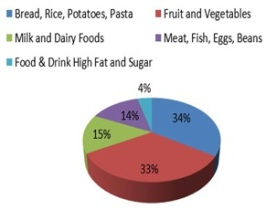
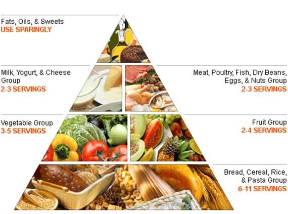

BALANCED DIET
A balanced diet provides all the nutrients in required amounts and proper proportions. It can be easily achieved through a blend of the five basic food groups. Balanced diet is needed to supply nutrition and energy for maintaining body cells, tissues, and organs, and for supporting normal growth and development. Nutrition is a basic prerequisite to sustain life. Variety in food is not only the spice of life but also the essence of nutrition and health.

Five Food Groups
Carbohydrate gives energy of 4kcal/g, Protein 4Kcal/g, Fat 9Kcal/g, Alcohol 7Kcal/g
Balanced diet should provide
- Around 50-60% of total calories from carbohydrates, preferably from complex carbohydrate
- 10 15% from proteins
- 20-30% from visible and invisible fats.
- Should provide other non-nutrients such as dietary fiber, antioxidants and phytochemicals for health benefits.
- Antioxidants such as vitamins C and E, beta-carotene, riboflavin and selenium protect the human body from free radical damage.
- Other phytochemicals such as polyphenols, flavones, etc., also afford protection against oxidant damage.
- Spices like turmeric, ginger, garlic, cumin and cloves are rich in antioxidants.
- Eat variety of foods to ensure a balanced diet.
- Prefer fresh, locally available vegetables and fruits in plenty.
- Eat a variety of 5 or more of different coloured fruits and vegetables every day. Choose Green leafy vegetables regularly.
- Every individual should consume atleat 300g of vegetables (Green leafy vegetables: 50g; other vegetables: 200 g; Roots & Tubers: 50 g) in a day. In addition, fresh fruits (100 g) should be consumed regularly.
- Restrict salt intake to minimum - 6g of salt a day ( 2.4g sodium)
- Don’t skip breakfast: Start your day with a healthy breakfast.
- Limit intake of caffeine and alcohol
- Adults with sedentary lifestyle should consume about 25 g of visible fat, hard physical work individual require 30 - 40g of visible fat.
- Diets of young children and adolescents should contain about 30-50gof fat /day.
- Cholesterol intake should be maintained below 200 mg/day. Saturated fat (‘bad fats’) and cholesterol intake can be reduced by limiting the consumption of high-fat animal foods like butter, ghee, meat, egg and organ meats and consuming low fat (skimmed) milk instead of whole milk.
- Get fewer than 10% of calories from saturated fatty acids. Avoid trans fatty (Deep fried foods, Margarine, cookies and cakes etc) acids.

- Choose good fat such as fish, nuts and vegetable oils containing poly unsaturated and mono unsaturated fatty acids. Lean, low-fat or Fat free meats, poultry, dry beans and milk or milk products are preferable.
- Consume 3 cups per day of fat free or low fat milk or milk products.
- Eat more fish it’s a good source of protein as well as containing important vitamins and minerals. Oily fish are high in omega 3 fats.
- Don’t eat more food –Average daily allowance is 2,000 calories.
- Prepare and cook meals using fresh ingredients. Ready meals and take – away tend to be high in fat and salt and should not e eaten regularly.
- Eat fish more frequently (at least 100-200g /week), prefer it to meat, poultry and limit/ avoid organ meats such as liver, kidney, brain etc.
- Egg has several important nutrients but is high in cholesterol. Limit the consumption to 3 eggs/ week. However, egg white may be consumed in good amounts.
- Minimize consumption of ready- to- eat fast foods, bakery foods and processed foods prepared in hydrogenated fat. Use of re-heated fats and oils should be avoided.
- A minimum 30-45 minutes brisk walk/physical activity of moderate intensity improves overall health.
- Eat complex carbohydrates, low glycemic foods and fibre rich diets.
- Eat Smart: Eat when you are hungry; stop when you are full.
Vegetarians can derive almost all the nutrients from diets consisting of cereals, pulses, vegetables, fruits and milk-based diets. Vegetables and fruits provide protective substances such as
vitamins/ minerals/ phytonutrients. Requirements of essential nutrients vary with age, gender, physiological status and
physical activity. Dietary intakes lower or higher than the body requirements can lead to undernutrition (deficiency diseases)
or overnutrition (diseases of affluence) respectively. No single food can provide all the essential nutrients that the body
needs. Therefore, it is important to consume a wide variety of foods to provide adequate intakes of vitamins, minerals and
dietary fibre. Develop healthy eating habits and exercise regularly and move as much as you can to avoid sedentary lifestyle.